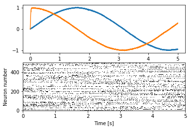
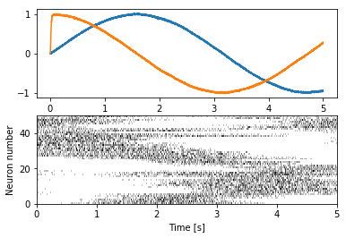

Creating spike raster plots¶
This example demonstrates how spike raster plots can be easily created with nengo_extras.
In [1]:
%matplotlib inline
import matplotlib.pyplot as plt
import nengo
import numpy as np
from nengo_extras.plot_spikes import (
cluster, merge, plot_spikes, preprocess_spikes, sample_by_variance)
Build and run a model¶
In [2]:
with nengo.Network(seed=1) as model:
inp = nengo.Node(lambda t: [np.sin(t), np.cos(t)])
ens = nengo.Ensemble(500, 2)
nengo.Connection(inp, ens)
p = nengo.Probe(ens, synapse=0.01)
p_spikes = nengo.Probe(ens.neurons, 'spikes')
In [3]:
with nengo.Simulator(model) as sim:
sim.run(5.)
0%
0%
Simple spike raster plot¶
We can use the plot_spikes function to create a simple spike raster
plot.
In [4]:
plt.figure()
plt.subplot(2, 1, 1)
plt.plot(sim.trange(), sim.data[p])
plt.subplot(2, 1, 2)
plot_spikes(sim.trange(), sim.data[p_spikes])
plt.xlabel("Time [s]")
plt.ylabel("Neuron number")
Out[4]:
Text(0,0.5,'Neuron number')

Improved plot¶
We can create a more informative plot with some preprocessing of the
spike trains. Specifically, we subsample interesting ones and sort them
by similarity. Usually, the preprocessing done with the
preprocess_spikes function works well.
In [5]:
plt.figure()
plt.subplot(2, 1, 1)
plt.plot(sim.trange(), sim.data[p])
plt.subplot(2, 1, 2)
plot_spikes(*preprocess_spikes(sim.trange(), sim.data[p_spikes]))
plt.xlabel("Time [s]")
plt.ylabel("Neuron number")
Out[5]:
Text(0,0.5,'Neuron number')

There are some arguments that can be passed to preprocess_spikes for
fine tuning. But sometimes it is necessary to change what things are
done during the preprocessing. The nengo_extras.plot_spikes module
provides a number of lower level functions to construct specific
preprocessing pipelines. This example recreates what
preprocess_spikes does.
In [6]:
plt.figure()
plt.subplot(2, 1, 1)
plt.plot(sim.trange(), sim.data[p])
plt.subplot(2, 1, 2)
plot_spikes(
*merge(
*cluster(
*sample_by_variance(
sim.trange(), sim.data[p_spikes],
num=200, filter_width=.02),
filter_width=.002),
num=50))
plt.xlabel("Time [s]")
plt.ylabel("Neuron number")
Out[6]:
Text(0,0.5,'Neuron number')
